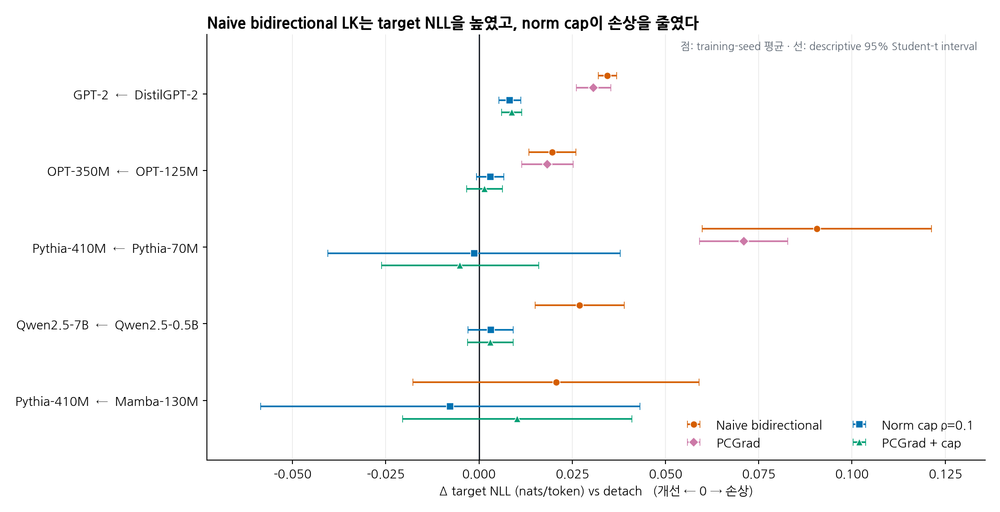
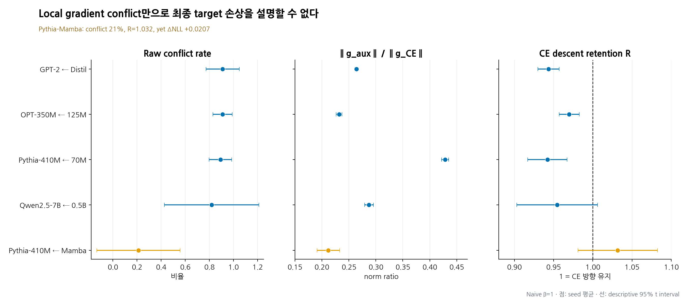
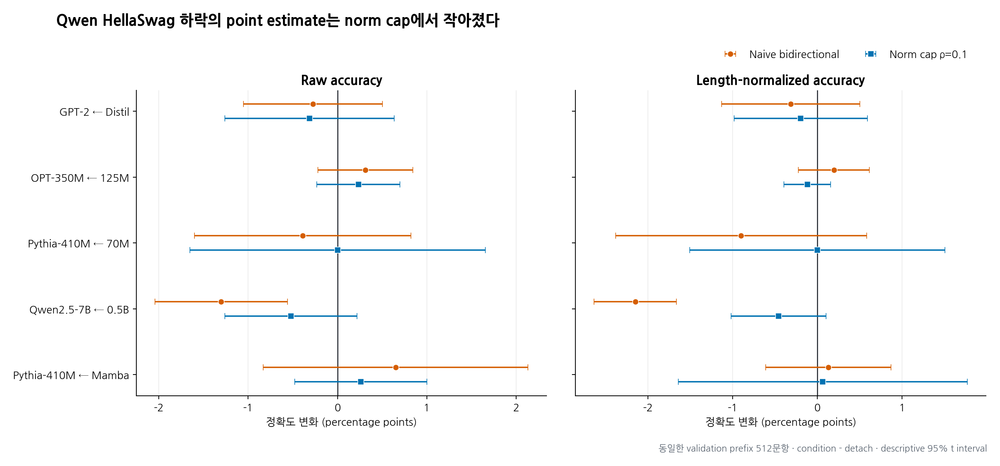
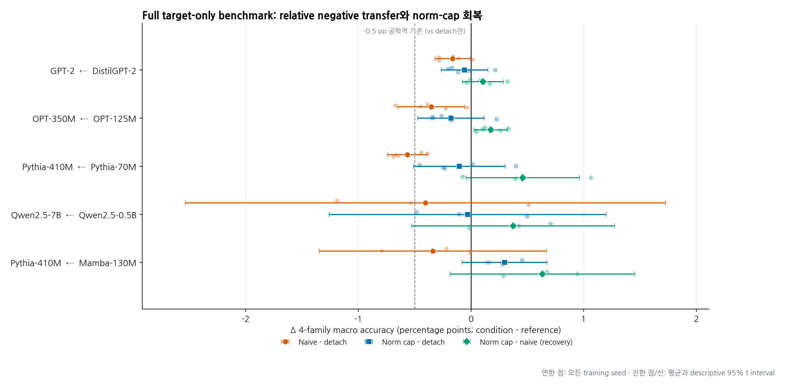
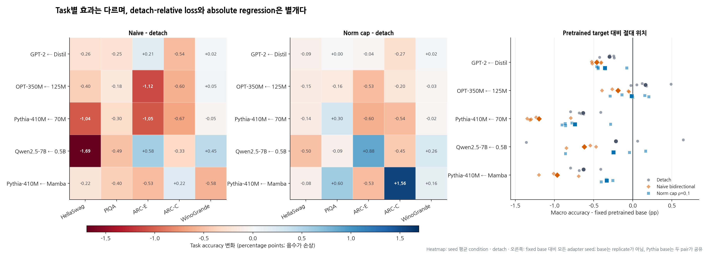
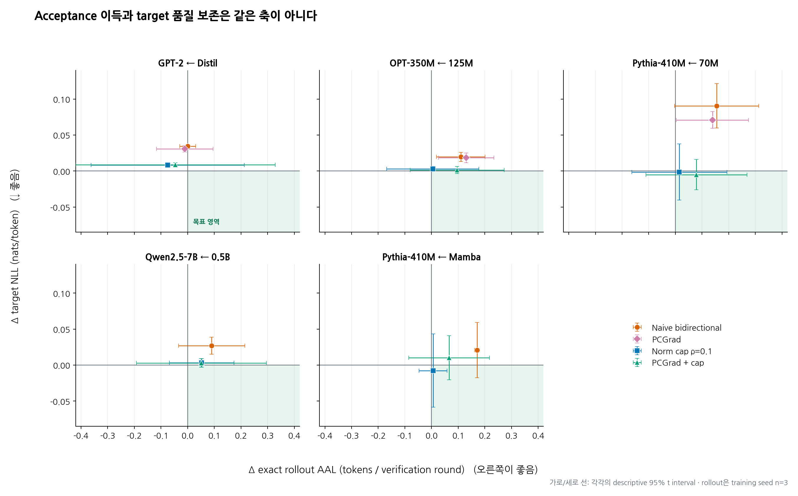
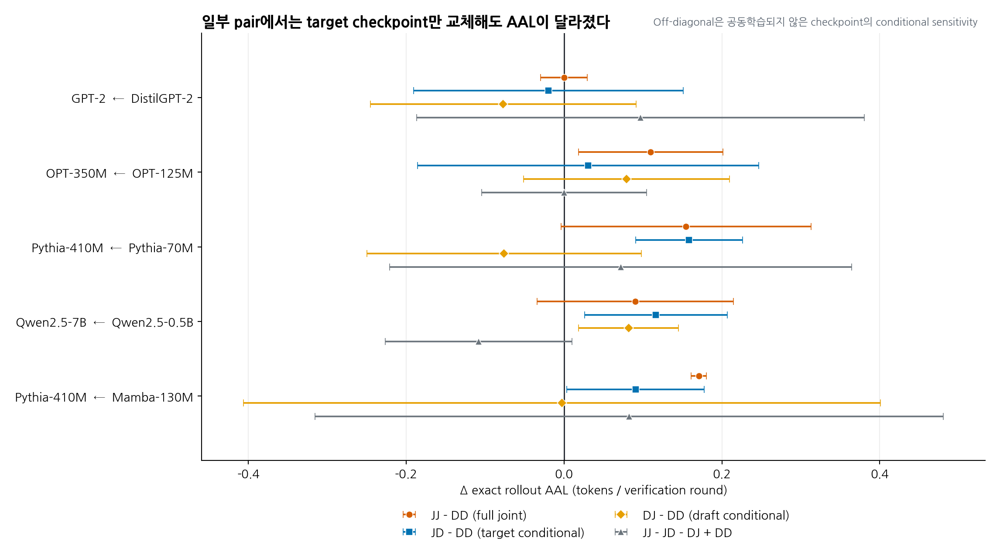

독립 pretrained AR target–drafter 양방향 학습의 gradient 간섭¶
후속 종합 보고서 · 2026-07-14
범위: MEDUSA/EAGLE식 shared head가 아니라 embedding, backbone, LM head, adapter, optimizer가 완전히 분리된 두 autoregressive language model
상태: controlled LoRA 실험의 descriptive evidence이며 peer-reviewed 결과가 아님
0. 한 문장 결론¶
현상은 실재하지만 “drafter loss가 언제나 target gradient를 치명적으로 망친다”는
설명은 부정확하다. 최신 acceptance-oriented Hybrid LK loss를 pretrained target과
독립 pretrained AR drafter 양쪽으로 미분하면, confirmatory LK schedule η=3과
본 연구의 experimental target coefficient β=1 설정에서 같은
target CE를 쓰는 detach 대조군보다 WikiText target NLL이 다섯 pair, 21/21 seed에서
나빠졌다. 사전 고정 full five-task macro에서도 21 seed 중 19개와 5/5 pair 평균이
낮았고, naive checkpoint 21/21이 fixed pretrained base 아래였다. 그러나 Qwen 한 seed와
여러 task에서는 반대 부호였고, 모든 target의 WikiText NLL은 pretrained 초기값보다
여전히 좋아졌으며 CE의 일차 descent 방향이 뒤집힌 step도 없었다. 관찰된 문제는
폭발적 gradient failure보다는
target의 in-domain 적응을 약화시키고, 장기 co-adaptation을 통해 target을 draft 쪽으로
움직이면서 broad downstream 성능까지 자주 낮추는 negative transfer에 가깝다.

그림 1. Confirmatory η=3과 experimental target β=1에서의 WikiText target NLL
변화(condition − detach, nats/token). 양수는 target 품질 저하다. 점과 선은
training-seed 평균과 descriptive 95% Student-t interval이다(n=5 small, n=3
scale/cross). Scale 두 pair의 uncapped PCGrad는 실행하지 않았으며, pair를 하나의
population effect로 pooling하지 않았다.
가장 실용적인 결론은 다음과 같다.
- Exact speculative decoding이나 standalone drafter 학습 자체는 target-side draft loss를 요구하지 않는다. Target adaptation을 유지한다면 alignment loss에서 detach하고, target adaptation 자체가 불필요할 때만 target을 freeze하는 것이 안전한 기본값이다.
- 양방향 target-aware 학습을 반드시 써야 한다면, WikiText target NLL 보호에는
PCGrad 단독보다
||g_aux|| ≤ 0.1 ||g_main||target-priority norm cap이 훨씬 효과적이었다. Full downstream macro도 naive 대비 5/5 pair 평균에서 회복했지만, detach 대비 잔여 평균 손상은 4/5 pair에 남았다. - 이 cap은 target 손상을 크게 줄였지만 완전히 없애지 못했고 acceptance 이득도 줄였다. 공짜 완화법은 아니었다.
- Teacher-forced overlap은 실제 rollout의 충분한 proxy가 아니었다. GPT-2에서는
overlap이
+0.035늘어도 전체 AAL은 사실상 변하지 않았고 WikiText AAL은 줄었다. - Pythia cross-swap에서는 joint target만 넣을 때 AAL이
+0.158, joint draft만 넣을 때-0.076이었다. 이 conditional point estimate는 겉보기 acceptance 향상의 상당 부분이 “draft 개선”보다 “target이 draft 쪽으로 이동”한 현상과 양립했다. - 현상은 architecture와 무관한 정리가 아니다. 특히 Pythia–Mamba에서는 local raw conflict가 21%에 불과하고 CE retention이 1보다 컸는데도 최종 WikiText NLL은 나빠졌다. 최종 결과는 instantaneous cosine보다 trajectory와 domain에 더 의존했다.
1. 연구 질문과 정확한 비교¶
Target distribution을 p_θ, drafter를 q_φ라 하자. 두 모델은 동일한 token ID
sequence를 받지만 parameter나 hidden state를 공유하지 않는다. 비교한 target update는
다음 두 가지다.
Draft gradient coefficient는 모든 arm에서 1로 고정했다. 따라서 intervention은 “draft도 함께 학습했는가”가 아니라 동일한 draft loss가 target logit graph까지 흘렀는가다. 같은 seed의 arm은 minibatch 순서, optimizer, schedule, token exposure가 같다.
여기서 중요한 정정이 하나 있다. Target-side L_A는 speculative decoding 일반의
필수조건이 아니다. 이는 target까지 co-adapt시키는 특정 joint scheme의 설계 선택이다.
고정 target에 대해 draft만 distill해도 exact rejection sampling은 성립한다.
2. 문헌 확인¶
2026-07-14까지 확인한 1차 문헌의 위치는 다음과 같다.
| 연구 | 별도 pretrained AR draft | draft loss가 target을 갱신 | 본 연구와의 관계 |
|---|---|---|---|
| Speculative Decoding, ICML 2023 | 예 | 아니오 | 고정 target에 대한 exact rejection sampling |
| DistillSpec, ICLR 2024 | 예 | 아니오 | Target prediction으로 draft만 distill |
| Online Speculative Decoding, ICML 2024 | 예 | 아니오 | 관측 query에서 draft만 online update |
| Direct Alignment/TVD++, 2024 | 예 | 아니오 | TVD를 직접 최적화하지만 target은 teacher |
| AdaSPEC, 2025 | 예 | 아니오 | Task-adapted target에 selective draft distillation |
| EAGLE, EAGLE-3 | 아니오 | 아니오 | Target feature를 쓰는 native head, target 고정 |
| LK Losses v2, 2026 | 주 실험은 아니오 | 아니오 | 최신 direct-acceptance loss, 고정 target에서 검증 |
| MEDUSA-2 | 아니오 | 예 | Head loss의 큰 초기 gradient가 backbone을 왜곡할 수 있음을 명시 |
| Halfway Speculative Decoding | 아니오 | 예 | Llama target LoRA와 scratch EAGLE-3형 head의 joint LK; 약한 quality 하락 보고 |
| ReSpec, MLSys 2026 | 예 | 직접적으로 아니오 | RL rollout feedback 문제이며 shared-loss gradient와 다름 |
가장 가까운 동기는 MEDUSA-2와 Halfway다. 두 연구 모두 draft 계열 loss가 target을 왜곡할 수 있음을 인지하지만, 별도 pretrained AR drafter가 아니다. 반대로 DistillSpec, OSD, TVD++, AdaSPEC은 별도 AR pair를 쓰지만 target을 고정한다. 따라서 조사한 문헌에서 독립 pretrained AR pair × bidirectional acceptance loss × target-gradient 직접 분석의 교차점은 비어 있었다. 이는 검색 범위 안의 gap이지 절대적인 최초성 주장은 아니다.
일반 multi-objective 완화법으로는 PCGrad, GradNorm, CAGrad, MGDA가 있다. 다만 이들은 standalone speculative target–draft의 bidirectional LK 조합에서 검증된 해법이 아니며, 본 실험은 PCGrad와 target-priority norm cap만 직접 비교했다.
3. Loss, 모델, 학습 설계¶
3.1 최신 loss 선택¶
주 objective는 LK Losses v2의 Hybrid LK 형식을 사용했다.
Confirmatory panel은 논문/공개 recipe의 대표값인 η=3을 사용했다. 이 식은 고정
target에서 draft를 학습하도록 제안된 것이므로, target에도 미분한 본 실험은 공식 LK
recipe의 재현이 아니라 bidirectional extension의 안전성 시험이다.
Target CE와 각 모델의 NLL은 각자의 native LM head 전체에서 계산했다. Target–draft alignment만 두 tokenizer에 실제로 배정된 공통 contiguous ID support로 projection했다. 따라서 Qwen과 Pythia–Mamba처럼 raw output row 수가 달라도, token→ID 의미가 완전히 같은 pair는 시험할 수 있었다.
3.2 모델 matrix¶
| Pair | Target/draft revision | assigned support | raw target/draft head | target/draft trainable LoRA |
|---|---|---|---|---|
| GPT-2 ← DistilGPT-2 | 607a30d… / 2290a62… |
50,257 | 50,257 / 50,257 | 1.18M / 0.59M |
| OPT-350M ← OPT-125M | 08ab08c… / 27dcfa7… |
50,265 | 50,272 / 50,272 | 3.54M / 1.33M |
| Pythia-410M ← Pythia-70M | 9879c9b… / a39f36b… |
50,277 | 50,304 / 50,304 | 3.15M / 0.39M |
| Qwen2.5-7B ← Qwen2.5-0.5B | d149729… / 060db64… |
151,665 | 152,064 / 151,936 | 20.19M / 4.40M |
| Pythia-410M ← Mamba-130M | 9879c9b… / 1e76775… |
50,277 | 50,304 / 50,280 | 3.15M / 1.79M |
마지막 pair는 Transformer target과 state-space drafter의 교차 architecture 대조군이다. 모든 모델은 pretrained checkpoint를 불러오고 base weight는 고정한 채 LoRA만 학습했다.
3.3 공통 학습·평가 조건¶
- Train: WikiText-103, 100 steps, batch 4, sequence 64, 25,600 input tokens/run
- Eval: WikiText-2, TinyStories, GSM8K text에서 각각 8,064 next-token labels
- Optimizer: target/draft 별도 AdamW, LR
2e-4, cosine, warmup 10, clip0.5 - LoRA: rank 8, alpha 16, dropout 0
- Precision/hardware: bfloat16 training, NVIDIA H100
- Confirmatory small panel: 3 pair × 7 cells × 5 seeds = 105 runs
- Scale/cross panel: 2 pair × 4 cells × 3 seeds = 24 runs
- 후속 학습 합계: 129 runs, 12,900 optimizer steps, 모든 checkpoint 저장
Target 자체의 downstream 성능을 확인하는 confirmatory panel은 결과를 보기 전에
TARGET_BENCHMARK_PROTOCOL.md에 고정했다. Draft를
로드하지 않고 detach, naive β=1, pure cap ρ=0.1의 target adapter 63개와
adapter-disabled pretrained target 4개를 FP32로 평가했다. 각 checkpoint는 HellaSwag,
PIQA, ARC-Easy, ARC-Challenge, WinoGrande validation의 총 14,016문항을 모두 사용했다.
전체는 67개 checkpoint × 14,016 = 939,072 checkpoint-example row이며, 이는 평가량이지
독립 통계 표본 수가 아니다.
Prompt와 primary metric 의미는 pinned lm-evaluation-harness commit을 따르지만
add_special_tokens=False, native target logits 정책이므로 표준 wrapper와 bit-for-bit
동일하다고 주장하지 않는다.
이전 dose/objective/vocab/mitigation panel 240개까지 포함하면 전체 standalone 연구는 369 training runs, 36,900 optimizer steps다. 후속 연구는 이전 결론을 그대로 재사용하지 않고, confirmatory LK schedule과 experimental target coefficient, 새 checkpoint 저장, unequal output-head projection, 7B scale, cross architecture, actual rollout, external task를 새로 확인한 단계다.
Small 7-cell panel은 다음으로 구성했다.
detach- naive bidirectional
β=1 - PCGrad +
β=1 - pure norm cap
β=1,||g_aux||/||g_main|| ≤ 0.1 - PCGrad + 같은 cap
- detach + pretrained-target KL anchor weight 1
- bidirectional + 같은 anchor
Scale/cross panel은 anchor와 uncapped PCGrad를 제외한 4개 핵심 cell을 사용했다.
3.4 판정 지표¶
Target main gradient를 g_C, target-side alignment gradient를 g_A라 하면
를 CE descent retention으로 기록했다. cos(g_C,g_A)<0은 conflict이지만, 실제 일차
방향 역전은 R<0일 때뿐이다. 또한 AdamW step의 실제 parameter delta Δθ에 대해
g_C^TΔθ>0인지 별도로 측정했다.
최종 endpoint는 다음을 분리했다.
- Target quality: native-head NLL, pretrained-base KL/top-1 agreement
- Draft quality: native-head NLL
- Alignment: teacher-forced overlap와 top-1 agreement
- Exploratory 외부 task sanity: pinned HellaSwag validation prefix 512문항
- Confirmatory target-only downstream: full five-task validation, four-family macro, fixed pretrained target reference
- Actual decoding: temperature 1, top-p 1, full assigned support의 exact rejection sampling
- Cross-swap: detach/joint target와 detach/joint draft의 2×2 checkpoint 교환
4. 핵심 학습 결과¶
4.1 Confirmatory η=3 + experimental target β=1에서 다섯 pair 모두 재현됐다¶
아래 값은 같은 seed의 condition − detach다. Target/draft NLL은 양수가 나쁨,
overlap은 양수가 좋음이다.
정확한 condition별 수치 보기
| Pair | naive target NLL | PCGrad | pure cap .1 | PCGrad+cap .1 | naive overlap | naive draft NLL |
|---|---|---|---|---|---|---|
| GPT-2 ← Distil | +0.03444 | +0.03073 | +0.00827 | +0.00877 | +0.03512 | +0.00635 |
| OPT-350M ← 125M | +0.01968 | +0.01833 | +0.00300 | +0.00148 | +0.03462 | +0.01640 |
| Pythia-410M ← 70M | +0.09055 | +0.07099 | −0.00132 | −0.00506 | +0.04608 | +0.07836 |
| Qwen2.5-7B ← 0.5B | +0.02696 | — | +0.00312 | +0.00304 | +0.03974 | +0.02885 |
| Pythia-410M ← Mamba-130M | +0.02066 | — | −0.00770 | +0.01024 | +0.03414 | +0.02538 |
Naive contrast의 descriptive 95% Student-t interval은 다음과 같다.
Seed 통계와 95% interval 보기
| Pair | n | mean ± SD | 95% t interval | positive seeds |
|---|---|---|---|---|
| GPT-2 ← Distil | 5 | +0.03444 ± 0.00195 | [0.03201, 0.03686] | 5/5 |
| OPT-350M ← 125M | 5 | +0.01968 ± 0.00511 | [0.01334, 0.02602] | 5/5 |
| Pythia-410M ← 70M | 5 | +0.09055 ± 0.02476 | [0.05980, 0.12129] | 5/5 |
| Qwen2.5-7B ← 0.5B | 3 | +0.02696 ± 0.00481 | [0.01500, 0.03891] | 3/3 |
| Pythia-410M ← Mamba-130M | 3 | +0.02066 ± 0.01545 | [−0.01774, 0.05905] | 3/3 |
즉 sign은 21/21 seed에서 일관됐다. 다만 마지막 pair는 n=3 interval이 0을 포함한다. NLL 차이를 perplexity ratio로 바꾸면 naive joint는 detach 대비 약 2.0–9.5% 높다.
4.2 “치명적 붕괴”는 아니었다¶
Naive joint target의 final NLL − pretrained initial NLL 평균은 다음과 같이 모두
음수였다.
| Pair | joint target NLL change from initial |
|---|---|
| GPT-2 ← Distil | −0.4144 |
| OPT-350M ← 125M | −0.5596 |
| Pythia-410M ← 70M | −0.4565 |
| Qwen2.5-7B ← 0.5B | −0.5193 |
| Pythia-410M ← Mamba-130M | −0.5313 |
따라서 WikiText NLL 축에서는 “pretrained target이 망가졌다”보다 detach라면
얻었을 추가 CE adaptation을 일부 잃었다가 정확하다. 실제로 naive target의
pretrained-base KL은 detach보다 각 pair에서
−0.056/−0.097/−0.126/−0.081/−0.168 낮았다. Alignment가 target을 원래 base에서 더
멀리 폭주시킨 것이 아니라, 대체로 base/draft 근처에 붙잡아 in-domain
specialization을 약화시켰다. 이 문장은 downstream task의 절대 성능까지 보장하지
않으며, adapter-disabled pretrained target 대비 위치는 §7.3에서 별도로 판정한다.
4.3 Overlap 증가는 draft 자체의 언어모델 개선이 아니었다¶
Naive joint는 overlap을 모든 pair에서 +0.034~+0.046 높였지만, draft NLL도 모든
pair에서 detach보다 나빴다. 각 draft는 pretrained initial보다는 좋아졌지만 개선 폭이
줄었다. 즉 alignment gain의 상당 부분은 “draft가 더 좋은 LM이 됨”이 아니라 target과
draft가 서로 가까워진 결과다.
4.4 이전 240-run panel이 보여준 schedule·objective sensitivity¶
이번 confirmatory 결과만 보면 harm이 항상 발생하는 것처럼 보일 수 있다. 그러나 같은
v2 functional form에 η=10을 둔 이전 fixed-β=1 panel에서 WikiText NLL harm은
GPT +0.0256±0.0021, OPT +0.0115±0.0050, Pythia +0.0012±0.0204였고 Pythia는
3/5 seed만 양수였다. Fixed norm ratio ρ=0.1도 9개 seed 중 7개만 양수였다. 따라서
“어떤 schedule과 dose에서도 필수적으로 나타난다”는 가설은 전체 자료가 반박한다.
Forward KL과 total variation objective도 별도로 비교했다. Fixed β=1에서
forward-KL harm은 GPT/OPT/Pythia +0.0975/+0.0817/+0.3892, TV는
+0.0284/+0.0133/+0.0078이었다. 세 objective의 33개 seed contrast 중 30개가
양수였지만, Pythia Hybrid와 TV의 interval은 0을 포함했다. 현상은 Hybrid LK 한
implementation만의 버그는 아니지만 objective에 따라 크기와 일관성이 크게 달랐다.
또한 fixed β와 fixed gradient ratio ρ를 혼동하면 안 된다. 매 step
||β_tg_A||/||g_C||=3을 강제한 stress test에서는 alignment가 진행돼 g_A가
작아질수록 β_t가 폭증했다. η=10, ρ=3의 NLL harm은
GPT/OPT/Pythia +1.0005/+2.3707/+14.2277이었고, Pythia 유효 β는 평균 약
1.18×10^4였다. 이는 natural loss_weight=1 failure가 아니라 aggressive closed-loop
intervention이다. PCGrad 뒤 ratio를 0.3으로 cap하면 같은 값이
+0.0390/+0.0276/+0.0549로 줄었다. 이 stress panel도 magnitude control이 projection
단독보다 중요하다는 후속 결과와 일치한다.
5. Gradient는 어떻게 나빠졌는가¶

그림 2. Naive β=1 target-gradient 진단. Conflict rate는
cos(g_C,g_A)<0인 diagnostic step 비율이고, R=1은 target CE 일차 descent 방향이
그대로 보존됨을 뜻한다. Pythia–Mamba는 conflict가 낮고 R>1인데도 최종 WikiText
NLL이 나빠졌다. 따라서 instantaneous cosine은 endpoint harm의 충분한 설명이 아니다.
Whisker는 seed-level descriptive 95% t interval이며 bounded rate의 interval도 임의로
clipping하지 않았다.
Pair별 gradient 진단 수치 보기
| Pair | raw conflict rate | ||βg_A||/||g_main|| |
CE retention R |
first-order reversal |
|---|---|---|---|---|
| GPT-2 ← Distil | 0.909 | 0.264 | 0.943 | 0/55 diagnostics |
| OPT-350M ← 125M | 0.909 | 0.232 | 0.970 | 0/55 |
| Pythia-410M ← 70M | 0.891 | 0.429 | 0.942 | 0/55 |
| Qwen2.5-7B ← 0.5B | 0.818 | 0.287 | 0.955 | 0/33 |
| Pythia-410M ← Mamba-130M | 0.212 | 0.212 | 1.032 | 0/33 |
실제 AdamW parameter delta에 대한 linearized CE harm도 231개 diagnostic 모두 0이었다. 따라서 세 가지를 구분해야 한다.
- Small same-family pair에서는
g_A가 대개g_C와 음의 dot을 가져 CE descent를 약화시켰다. - 그러나
g_C + g_A가 CE ascent로 뒤집힐 정도는 아니었다. - Cross-architecture pair에서는 local auxiliary가 오히려 CE 방향을 조금 도왔는데도 최종 held-out WikiText NLL이 나빠졌다.
결론적으로 instantaneous cosine은 위험 신호지만 충분조건도, 최종 harm의 완전한 설명도 아니다. Teacher distribution 자체가 매 step 바뀌는 co-adaptation, AdamW와 clipping, finite-step curvature, minibatch-to-validation 일반화가 누적 효과를 만든다.
6. Mitigation 비교¶
6.1 PCGrad 단독은 부족했다¶
PCGrad는 negative dot component를 제거해 local CE retention을 거의 1로 만들었다.
그런데 target NLL harm은 GPT 0.0344→0.0307, OPT 0.0197→0.0183, Pythia
0.0905→0.0710으로만 줄었다. 장기 target↔draft feedback과 magnitude 문제를
해결하지 못했기 때문이다.
6.2 Norm cap이 가장 효과적이었다¶
||g_aux,applied|| ≤ 0.1||g_main|| cap은 small/Qwen cell에서 100%, Mamba cell에서
99.67% step에 binding됐다. Pure cap의 target NLL harm은 GPT에서 76%, OPT에서 85%,
Qwen에서 88% 줄었고 Pythia 두 pair에서는 평균이 0 부근으로 갔다. 같은 cap 아래
PCGrad를 더한 추가 효과는 거의 없었다.
대가는 분명했다. Small-pair teacher-forced overlap gain은 naive의 약
+0.035/+0.035/+0.046에서 cap의 +0.014/+0.015/+0.012로 줄었다. Actual rollout에서도
대체로 같은 trade-off가 나타났다.
6.3 Fixed pretrained anchor weight 1은 안전장치가 아니었다¶
Anchor gradient 자체가 CE와 충돌했다.
| Pair | cos(g_C,g_anchor) |
||g_anchor||/||g_C|| |
|---|---|---|
| GPT-2 ← Distil | −0.352 | 0.401 |
| OPT-350M ← 125M | −0.312 | 0.415 |
| Pythia-410M ← 70M | −0.162 | 0.308 |
Anchor-matched 대조에서는 joint auxiliary harm이 +0.018/+0.022/+0.058로 일부
작아졌지만, anchor control 자체의 WikiText adaptation cost가
+0.078/+0.093/+0.088이었다. 결과적으로 joint+anchor를 plain detach와 비교한
operational cost는 +0.096/+0.114/+0.147이었다. Fixed weight 1 anchor는 base drift를
줄이는 대신 원하는 domain 적응까지 막았다.
7. Domain과 downstream 결과¶
7.1 NLL harm은 domain invariant하지 않았다¶
Naive condition − detach target NLL은 다음과 같다.
| Pair | WikiText-2 | TinyStories | GSM8K text |
|---|---|---|---|
| GPT-2 ← Distil | +0.0343 | +0.0233 | −0.0169 |
| OPT-350M ← 125M | +0.0197 | −0.0258 | −0.1020 |
| Pythia-410M ← 70M | +0.0905 | −0.0591 | −0.1289 |
| Qwen2.5-7B ← 0.5B | +0.0270 | −0.0631 | −0.1162 |
| Pythia-410M ← Mamba-130M | +0.0207 | −0.1274 | −0.1859 |
WikiText 계열 in-domain transfer는 consistently 약해졌지만, 더 멀리 떨어진 text domain에서는 joint가 regularizer처럼 작동한 경우가 많다. “Target quality”를 하나의 corpus NLL로만 정의하면 상반된 결론을 낼 수 있다.
7.2 Exploratory pinned HellaSwag 512-prefix sanity¶
각 checkpoint의 target adapter만 로드하고 draft는 로드하지 않았다. Native target
LM-head 전체에서 네 choice의 conditional likelihood를 batch-4로 계산했다. 전처리와
문자 길이 acc_norm은 pinned lm-eval HellaSwag 구현을 따르지만,
add_special_tokens=False이고 full wrapper parity는 아니므로 공식 leaderboard score가
아닌 동일-prefix paired sanity check다.

그림 3. 동일한 pinned HellaSwag validation prefix 512문항에서의 target-only accuracy
변화(condition − detach, percentage points). Qwen naive의 raw/length-normalized
하락 point estimate는 norm cap에서 작아졌다. 점과 whisker는 training-seed 평균과
descriptive 95% t interval(n=5 small, n=3 scale/cross)이다. 별도의 Qwen FP32
seed-0 확인은 precision audit이므로 이 seed-level interval에 섞지 않았다.
Pair별 정확도와 gold likelihood 수치 보기
| Pair | naive raw accuracy Δ | naive acc_norm Δ |
gold LL/token Δ | training seeds |
|---|---|---|---|---|
| GPT-2 ← Distil | −0.27 pp | −0.31 pp | +0.0002 | 5 |
| OPT-350M ← 125M | +0.31 pp | +0.20 pp | +0.0283 | 5 |
| Pythia-410M ← 70M | −0.39 pp | −0.90 pp | +0.0256 | 5 |
| Qwen2.5-7B ← 0.5B | −1.30 pp | −2.15 pp | +0.0283 | 3 |
| Pythia-410M ← Mamba-130M | +0.65 pp | +0.13 pp | +0.0772 | 3 |
Qwen raw accuracy의 95% seed-level t interval은 [−2.04, −0.56] pp, acc_norm은
[−2.63, −1.66] pp였다. Cap을 쓰면 Qwen raw/acc_norm 손상은 약
−0.52/−0.46 pp로 줄고 interval은 대부분 0을 포함했다. 반면 다른 pair의 표준
accuracy 변화는 작고 일관되지 않았다.
Cache audit에서 발견한 BF16 문제와 분리하기 위해 Qwen seed 0의 네 핵심 cell은
HellaSwag을 FP32로도 다시 계산했다. FP32 detach→naive raw/acc_norm은
53.52→51.95%, 66.60→64.45%였고, cap은 52.34/66.60%였다. BF16의
53.32→51.76%, 66.80→64.84%와 질적으로 같았다. 따라서 Qwen task 결론은
reduced-precision cache-shape artifact가 아니다.
Gold continuation likelihood가 좋아지면서 accuracy가 나빠질 수 있다는 점도 중요하다. WikiText CE adaptation 자체가 HellaSwag gold LL을 pretrained보다 악화시켰고, joint나 anchor가 그 adaptation을 줄여 LL을 회복한 경우가 있었다. 따라서 likelihood 하나도 task accuracy의 대체 지표가 아니다.
Seed 0 detach adapter를 adapter-disabled pretrained target과 같은 512문항에서 비교하면
raw accuracy 차이는 GPT +0.59, OPT +0.78, Pythia +0.59, Qwen −0.39 pp였다.
이는 실험 전체가 scratch foundation training이 아니라 pretrained model 위의 짧은
LoRA adaptation regime임을 재확인한다. Scratch 대조군을 실행하지 않았으므로 두
regime 사이의 현상 발생률이나 크기는 비교할 수 없다.
이 512-prefix 결과는 motivation과 precision sanity로 남기되, target downstream 성능의 주 결론은 다음 절의 사전 고정 full panel로 대체한다.
7.3 사전 고정 full five-task target-only panel¶
결과를 보기 전에 TARGET_BENCHMARK_PROTOCOL.md에
checkpoint, task, metric, macro, inference unit, stopping rule을 고정했다. Draft는 전혀
로드하지 않고 63개 target adapter(detach, naive β=1, pure cap ρ=0.1)와 4개
adapter-disabled pretrained target을 FP32 native-head로 평가했다. HellaSwag, PIQA,
ARC-Easy, ARC-Challenge, WinoGrande validation 14,016문항을 checkpoint마다 모두
사용했으므로 총 939,072 checkpoint-example row다. 문항 수가 커도 inferential unit은
오직 training seed이며, example·choice·token·task는 replicate가 아니다.
Primary four-family macro는
로 고정했다. Full validation zero-shot endpoint이지만 add_special_tokens=False와 native
target logit 정책을 쓰므로 표준 lm-eval wrapper 또는 test leaderboard parity를
주장하지 않는다.

그림 6. Full target-only four-family macro contrast(percentage points). 연한 점은 모든
training seed, 진한 점과 whisker는 pair별 평균과 descriptive 95% Student-t interval이다
(n=5 small, n=3 scale/cross). Pair를 architecture population처럼 pooling하지 않았다.
회색 점선 −0.5 pp는 detach-relative contrast에만 적용한 exploratory engineering
margin이며 유의성 경계가 아니다.
| Pair | n | naive − detach, pp [95% t CI] | 음수 seed | cap − detach, pp | cap − naive, pp |
|---|---|---|---|---|---|
| GPT-2 ← Distil | 5 | −0.163 [−0.320, −0.007] | 4/5 | −0.057 | +0.107 |
| OPT-350M ← 125M | 5 | −0.351 [−0.649, −0.054] | 5/5 | −0.176 | +0.175 |
| Pythia-410M ← 70M | 5 | −0.564 [−0.739, −0.389] | 5/5 | −0.103 | +0.461 |
| Qwen2.5-7B ← 0.5B | 3 | −0.403 [−2.534, +1.728] | 2/3 | −0.028 | +0.374 |
| Pythia-410M ← Mamba | 3 | −0.338 [−1.345, +0.669] | 3/3 | +0.298 | +0.636 |
Naive bidirectional target은 21 seed 중 19개에서 detach보다 낮았고, 다섯 pair 평균이
모두 음수였다. Small 세 pair의 descriptive interval은 0 아래에 있었지만, n=3인
Qwen과 cross-architecture pair의 interval은 매우 넓었다. 사전 고정 −0.5 pp 평균
margin을 넘은 것은 Pythia–Pythia 한 pair뿐이다. 따라서 broad downstream negative
transfer는 WikiText NLL보다 약하지만 반복적으로 관찰됐으며, 모든 seed에서 필연적인
현상은 아니다. 특히 Qwen seed 2는 +0.512 pp로 반대 부호였다.
Norm cap은 naive 대비 pair 평균을 5/5 pair에서 회복했고 21 seed 중 17개에서
cap − naive > 0이었다. 그러나 detach 대비 cap 평균은 GPT/OPT/Pythia/Qwen의 4/5
pair에서 여전히 음수였고, seed 단위로는 13/21이 음수였다. 즉 cap은 downstream에서도
유효한 완화법이지만 무손실 보장은 아니다. Pythia–Mamba에서만 cap 평균이 detach보다
+0.298 pp 높았다.
모든 seed의 세 primary contrast 보기 (pp)
| Pair | naive − detach | cap − detach | cap − naive |
|---|---|---|---|
| GPT-2 ← Distil | −0.161, −0.282, −0.111, +0.017, −0.281 | −0.166, −0.200, +0.215, −0.020, −0.113 | −0.005, +0.082, +0.326, −0.038, +0.168 |
| OPT-350M ← 125M | −0.384, −0.670, −0.446, −0.032, −0.223 | −0.259, −0.336, −0.342, +0.230, −0.175 | +0.125, +0.334, +0.104, +0.262, +0.049 |
| Pythia-410M ← 70M | −0.441, −0.383, −0.665, −0.641, −0.687 | +0.017, −0.455, +0.400, −0.247, −0.231 | +0.458, −0.072, +1.066, +0.394, +0.457 |
| Qwen2.5-7B ← 0.5B | −1.189, −0.531, +0.512 | −0.481, −0.104, +0.500 | +0.708, +0.427, −0.012 |
| Pythia-410M ← Mamba | −0.216, −0.790, −0.007 | +0.457, +0.155, +0.281 | +0.673, +0.945, +0.288 |

그림 7. 왼쪽 두 heatmap은 pair별 seed 평균 task accuracy 변화(pp)다. HellaSwag, PIQA, ARC-Easy, ARC-Challenge는 character-normalized accuracy, WinoGrande는 raw accuracy다. 오른쪽은 fixed adapter-disabled pretrained target 대비 모든 adapter seed의 macro 위치다. Fixed base는 training-seed replicate나 matched causal control이 아니며, 같은 target revision을 쓰는 두 Pythia pair가 하나의 base 값을 공유한다.
Task effect는 균일하지 않았다. Naive 평균은 Qwen HellaSwag −1.69 pp, OPT ARC-Easy
−1.12 pp, Pythia–Pythia HellaSwag/ARC-Easy −1.04/−1.05 pp였지만, Qwen
ARC-Easy와 WinoGrande는 +0.58/+0.45 pp였다. Pythia–Mamba도 ARC-Challenge는
+0.22 pp, WinoGrande는 −0.58 pp였다. Cap 역시 Mamba ARC-Challenge를
+1.56 pp 높이는 동시에 ARC-Easy는 −0.53 pp 낮췄다. Task를 replicate처럼 세지
않아도, 이 부호 혼합은 하나의 benchmark나 instantaneous gradient cosine만으로 target
quality를 대표할 수 없음을 보여준다.
Gold continuation log-likelihood/token은 또 다른 축이었다. Naive Qwen과
Pythia–Mamba는 다섯 task의 gold likelihood가 모두 detach보다 좋아졌는데도 macro
accuracy는 각각 −0.403/−0.338 pp였다. 전체 25 pair-task cell에서 naive gold
LL/token 평균은 20개가 증가했지만 primary accuracy 평균은 19개가 감소했고,
accuracy↓ / gold LL↑ 조합이 14개였다. 예를 들어 OPT HellaSwag은 accuracy
−0.404 pp [−0.494, −0.314]인데 gold LL/token은 +0.0231
[+0.0113, +0.0348]였다. Cap에서도 같은 괴리가 15/25 cell이었다. 이 task cell은
통계 replicate가 아니라 endpoint 이질성 진단이다. Gold choice likelihood 회복이
distractor와의 choice ranking 회복을 보장하지 않는 직접적인 dissociation이다.
Fixed pretrained target 대비 절대 위치는 다음과 같다. 괄호는 base보다 낮은 adapter seed 수다.
| Pair | fixed base macro | detach − base, pp | naive − base, pp | cap − base, pp |
|---|---|---|---|---|
| GPT-2 ← Distil | 43.746% | −0.297 (5/5) | −0.461 (5/5) | −0.354 (5/5) |
| OPT-350M ← 125M | 45.472% | +0.164 (1/5) | −0.187 (5/5) | −0.013 (2/5) |
| Pythia-410M ← 70M | 48.764% | −0.634 (5/5) | −1.198 (5/5) | −0.737 (5/5) |
| Qwen2.5-7B ← 0.5B | 73.606% | −0.217 (1/3) | −0.619 (3/3) | −0.245 (2/3) |
| Pythia-410M ← Mamba | 48.764% | −0.629 (3/3) | −0.967 (3/3) | −0.331 (3/3) |
Protocol의 operational 분류로는 naive가 5/5 pair 평균과 21/21 seed 모두 fixed base
아래이므로 absolute downstream regression이다. 다만 이 표는 additive causal
decomposition이 아니다. Detach 자체도 21 seed 중 15개와 4/5 pair 평균에서 base보다
낮았기 때문에, short WikiText LoRA adaptation의 broad-task cost와 auxiliary loss의
추가 cost를 구분해야 한다. Same-seed naive − detach만 target-side LK gradient의
matched relative effect다. 가장 깨끗한 crossing은 OPT로, detach는 base보다 평균
+0.164 pp였지만 naive는 −0.187 pp이고 5/5 seed가 base 아래로 내려갔다.
결론적으로 WikiText NLL에서는 naive harm이 21/21 seed였고, full downstream macro에서는 19/21 seed와 5/5 pair 평균이었다. 동시에 모든 naive target의 WikiText NLL은 pretrained 초기값보다 좋아졌지만 downstream macro는 21/21이 fixed base보다 낮았다. In-domain language-model adaptation과 broad zero-shot choice accuracy는 같은 “target 성능”이 아니며, 이번 추가 실험은 사용자의 우려를 실재하는 broader negative transfer로 확인하되 필연적·architecture-independent·catastrophic law로 해석해서는 안 된다는 경계를 준다.
8. Actual speculative rollout¶
8.1 정확성 protocol¶
- Temperature 1, top-p 1, tokenizer-assigned full support
- Chain length
K=3, context 64, 32 generated tokens - WikiText-2/TinyStories/GSM8K text 각각 4 prompts
- Prompt당 stochastic seed 2개, training seed 3개
- 모든 prompt에서 speculative greedy output과 같은 trained target의 target-only greedy output이 정확히 같아야 함
- Sampling seed와 round는 prompt 안에서 먼저 평균하고, condition contrast는 같은 prompt에서 만든 뒤 training seed를 inferential unit으로 사용
여기서 AAL(average accepted length)은 verification round마다 수용한 draft token 수의
평균에 verifier가 확정하는 1개 token을 더한 값이며, 단위는 tokens/verification round다.
이는 production serving의 verifier-call당 실제 방출 token 수나 wall-clock speedup과
동일한 지표가 아니다.

그림 4. Target 품질과 actual acceptance의 두 축. 오른쪽은 exact FP32 AAL 증가
(tokens/verification round), 아래쪽은 WikiText target NLL 감소(nats/token)이므로
음영 영역이 원하는 방향이다. Whisker는 각 endpoint의 descriptive 95% t interval이다.
Small-pair NLL은 5 seeds, rollout은 공통 3 seeds이므로 이 그림은 condition endpoint
요약이지 seed-level 상관관계 추정이 아니다. Norm cap은 대체로 target을 보호했지만
acceptance gain도 줄였다.
8.2 Small-pair AAL¶
Small-pair AAL 정확한 수치 보기
| Pair | detach AAL | naive Δ | PCGrad Δ | cap Δ | PCGrad+cap Δ |
|---|---|---|---|---|---|
| GPT-2 ← Distil | 2.693 | −0.000 | −0.011 | −0.075 | −0.046 |
| OPT-350M ← 125M | 2.413 | +0.110 | +0.130 | +0.005 | +0.096 |
| Pythia-410M ← 70M | 1.849 | +0.154 | +0.139 | +0.015 | +0.079 |
OPT naive AAL interval은 [+0.018,+0.201]; Pythia는 n=3이라 평균은 양수지만
[−0.004,+0.313]이었다. GPT는 teacher-forced overlap이 +0.035였음에도 전체
AAL은 0이었다. Corpus별로는 GPT WikiText AAL이 −0.140, TinyStories/GSM8K가
각각 +0.066/+0.074였다. Offline ground-truth context alignment만으로 on-policy
acceptance를 판단하면 안 된다.
Transparent FP32 reference implementation의 prompt-cluster wall-clock speedup을
training seed 사이에서 평균하면 detach 기준
GPT 0.62×, OPT 0.57×, Pythia 0.56×로 모두 1보다 작았다. 이는 serving engine이나
fused kernel benchmark가 아니므로 production throughput 주장이 아니다. AAL 증가와
실제 speedup도 별개라는 안전장치로만 해석한다.
8.3 Cross-swap으로 acceptance 이득의 checkpoint 민감도를 진단¶
DD는 detach target+draft, JJ는 joint target+draft, JD는 joint target+detach
draft, DJ는 detach target+joint draft다.

그림 5. Exact FP32 rollout의 cross-swap checkpoint sensitivity. JD−DD와 DJ−DD는
반대편 checkpoint를 detach에 고정한 conditional effect이고, JJ−DD는 diagonal full
joint effect다. 회색 삼각형은 factorial interaction JJ−JD−DJ+DD다. 점과 whisker는
세 training seed의 평균과 descriptive 95% t interval이다. Off-diagonal checkpoint는
공동학습되지 않았고 interaction도 존재할 수 있으므로 세 효과를 가산적 인과 기여로
합치지 않는다. AAL 단위는 tokens/verification round다.
Small-pair cross-swap 정확한 수치 보기
| Pair | JJ−DD AAL |
conditional target effect JD−DD |
conditional draft effect DJ−DD |
interaction |
|---|---|---|---|---|
| GPT-2 ← Distil | −0.000 | −0.020 | −0.077 | +0.097 |
| OPT-350M ← 125M | +0.110 | +0.031 | +0.079 | +0.000 |
| Pythia-410M ← 70M | +0.154 | +0.158 | −0.076 | +0.072 |
Pythia target-only conditional swap interval은 [+0.091,+0.226]이고, off-diagonal
JD−DJ=+0.234 [0.127,0.341]였다. 이 pair의 acceptance 향상은 draft checkpoint의
standalone 개선보다 target 이동이 더 큰 역할을 했다는 해석을 강하게 지지한다. 이는
target quality와 acceptance를 같은 숫자로 최적화하면 “target을 draft 쪽으로 움직여
acceptance를 높이는” shortcut이 생길 수 있다는 진단 근거다.
단, JD−DD와 DJ−DD는 다른 쪽 checkpoint를 detach 상태에 고정한 conditional/simple
effect다. Off-diagonal pair는 서로 공동학습되지 않은 mismatched checkpoint이므로,
cross-swap은 JJ−DD를 유일한 additive causal contribution으로 분해하지 않는다.
8.4 Scale/cross rollout¶
같은 FP32 protocol을 Qwen2.5-7B와 Pythia–Mamba에도 적용했다. 아래 AAL은 prompt를 먼저 동일 가중으로 묶은 뒤 training seed 사이에서 비교한 값이다.
Scale/cross AAL과 cross-swap 수치 보기
| Pair | detach AAL | naive Δ [95% t interval] | cap Δ | PCGrad+cap Δ | target effect | draft effect | interaction |
|---|---|---|---|---|---|---|---|
| Qwen2.5-7B ← 0.5B | 2.474 | +0.090 [−0.034,+0.214] | +0.053 | +0.052 | +0.116 | +0.082 | −0.108 |
| Pythia-410M ← Mamba-130M | 2.181 | +0.171 [+0.161,+0.180] | +0.006 | +0.066 | +0.091 | −0.003 | +0.083 |
Qwen naive acceptance rate는 detach 0.491에서 0.521로, Pythia–Mamba는
0.394→0.451로 올랐다. Qwen의 target/draft conditional-effect interval은 각각
[+0.026,+0.207]/[+0.018,+0.145]였고 negative interaction interval은 0을
포함했다. 즉 두 checkpoint가 각각 alignment를 높였지만 단순 가산되지는 않았다.
Pythia–Mamba에서는 target-only effect interval이 [+0.004,+0.178]인 반면 draft-only
effect는 −0.003 [−0.406,+0.401]로 불안정했다. Pythia–Mamba의 point estimate에서
target-only conditional effect는 full joint gain의 약 53%였지만, 위 이유로 이를
가산적 인과 기여율로 해석하지 않는다.
Cap은 Pythia–Mamba의 naive AAL gain을 +0.171→+0.006으로 거의 제거하면서 앞 절의
target NLL 손상도 +0.0207→−0.0077로 줄였다. Qwen에서도 NLL 손상은
+0.0270→+0.0031로 줄었지만 AAL gain은 +0.090→+0.053으로 작아졌다. 이 역시
quality protection과 acceptance 사이의 Pareto trade-off다.
Transparent implementation의 prompt-cluster speedup을 training seed 사이에서 평균하면
Qwen detach/naive
0.435×/0.465×, Pythia–Mamba 0.119×/0.124×였다. Mamba는 rollback KV를
지원하지 않아 full recompute reference인 만큼 이 수치는 deployment benchmark가
아니다. 36개 scale/cross rollout run의 greedy exactness와 AAL/acceptance bookkeeping은
모두 fail-loud audit를 통과했다.
9. BF16 cache audit에서 발견한 별도 수치 문제¶
처음 rollout을 BF16 KV cache로 실행했을 때 fail-loud audit가 batched verifier와 full recompute 사이의 큰 차이를 잡았다. Cache/crop 논리 버그와 분리해 보니 BF16에서 sequence/batch shape에 따른 numerical divergence가 관찰됐고 FP32 eager에서는 사라졌다. 정확히 어느 attention/GEMM kernel이 원인인지는 격리하지 않았다.
GPT-2 WikiText 16 prompts × 4 positions에서:
| precision/backend | target batched verifier ↔ serial-KV max TV | draft max TV | target top-1 |
|---|---|---|---|
| BF16 eager | 0.121394 | 0.059455 | 63/64 |
| FP32 eager | 0.00000603 | 0.00000408 | 64/64 |
따라서 scientific rollout은 FP32 eager로 다시 실행했다. Cached benchmark의 operational
oracle은 ordinary one-token serial KV로 정의하고, batched verification과 rollback
probability TV가 1e-3을 넘으면 실패하도록 했다. Full recompute 차이는 non-blocking
diagnostic으로 별도 저장했다. 첫 FP32 smoke의 target/draft verifier TV는
3.11e-6/2.35e-6, greedy exactness는 1.0이었다.
이 발견은 학습 현상의 증거와 별개지만, reduced-precision cache path를 확인하지 않고 acceptance/AAL을 비교하면 inference numerics를 학습 효과로 오인할 수 있음을 보여준다.
10. 최종 해석¶
질문에 대한 직접 답¶
- 실재하는가? 예. Confirmatory Hybrid LK
η=3과 experimental targetβ=1의 pretrained standalone AR 설정에서 matched WikiText NLL harm은 5 pair, 21/21 seed, full downstream macro harm은 19/21 seed와 5/5 pair 평균에서 재현됐다. - Target 자체 성능이 빠지는가? 예. Same-seed detach 대비 four-family macro 평균은
GPT/OPT/Pythia/Qwen/Mamba pair에서 각각
−0.163/−0.351/−0.564/−0.403/−0.338 pp였다. - Architecture와 무관한가? Pair 평균의 sign은 이번 다섯 pair에서 같았지만, mechanism·크기·seed·task sign은 같지 않았다. 이를 architecture-independent law로 일반화할 수 없다.
- 항상 나타나는가? 아니다. 이전
η=10variant와 다른 dose, TinyStories/GSM8K, task별 accuracy뿐 아니라 full macro의 GPT/Qwen 각 한 seed에서도 sign이 달라졌다. - 치명적인가? Foundation-model collapse는 아니었다. WikiText NLL은 pretrained initial보다 모두 개선됐고 gradient reversal도 없었다. 그러나 naive 21/21이 fixed pretrained base보다 downstream macro가 낮았으므로 배포 품질 관점에서는 무시할 수 없는 절대 regression이다. 단, detach도 15/21이 base보다 낮았고 fixed base는 causal control이 아니므로, auxiliary loss의 직접 effect는 same-seed naive−detach로 읽어야 한다.
- Gradient conflict가 원인인가? 일부다. Same-family pair의 high conflict는 CE progress를 약화시켰지만, low-conflict Pythia–Mamba도 최종 harm을 보였다.
- Acceptance가 좋아지면 정당화되는가? 아니다. 실제 AAL gain이 없을 수도 있고, Pythia처럼 target 이동과 양립하는 conditional effect가 gain의 큰 부분일 수도 있다.
11. 권장 개선안¶
11.1 지금 바로 쓸 수 있는 안전 순서¶
- 기본값은 alignment에서 target detach. Target CE adaptation은 그대로 유지한다. Target adaptation 자체도 불필요한 배포 조건에서만 완전히 freeze한다.
- Draft-only warm-up. MEDUSA-2의 동기처럼 초기 약한 draft가 target을 끌지 않도록 draft를 먼저 맞춘다. 이 항목은 문헌 기반 제안이며 본 후속 panel에서 아직 직접 검증하지 않았다.
- Target auxiliary norm cap. WikiText target NLL 보호에는 본 실험에서 직접
검증한
ρ=0.1이 가장 강한 empirical support를 보였다. Full downstream macro도 naive 대비 17/21 seed와 5/5 pair 평균에서 회복했지만, detach 대비 잔여 손상은 13/21 seed와 4/5 pair 평균에 남았다.0.05는 다음 sweep의 미검증 시작 후보로만 둔다. - PCGrad는 cap의 보조 수단. 단독 안전장치로 사용하지 않는다.
- Target LR/update frequency를 draft보다 낮게. Target update를 매
mstep에만 적용하는 것도 후보지만 추가 실험이 필요하다. - Quality와 acceptance를 별도 gate. Same-domain held-out NLL, multi-domain task, exact rollout AAL을 Pareto frontier로 관리한다.
- Cross-swap audit를 필수화. Acceptance gain이 draft에서 왔는지 target drift에서 왔는지에 대한 checkpoint 민감도를 진단한다.
11.2 제안하는 target-priority capped update¶
여기서 검증된 시작값은 ρ=0.1이고, 더 보수적인 0.05는 후속 후보로 둔다.
P_{PCGrad}는 optional이며 pure cap에서는 identity다. Draft update는 기존처럼
∇_φL_A(sg[p],q)를 유지한다. 추가로 validation target constraint
를 넘으면 target-side coefficient를 줄이거나 update를 거부하는 dual/trust-region controller를 제안한다. Fixed anchor weight 1은 본 실험에서 실패했으므로, base KL은 상수 penalty보다 budget/constraint로 다루는 편이 타당하다. 이 controller 부분은 후속 제안이지 아직 검증된 결과가 아니다.
12. 한계와 다음 실험¶
- LoRA 100-step, 25.6K-token adaptation이며 foundation pretraining 전체를 대체하지 않는다.
- Training seed는 small n=5, scale/cross n=3이다. t interval은 descriptive다.
- 기존 HellaSwag figure는 exploratory 512-prefix다. Confirmatory panel은 14,016개 full validation 문항을 쓰지만 zero-shot validation endpoint이고 표준 lm-eval wrapper 또는 test leaderboard parity를 주장하지 않는다.
- Adapter-disabled pretrained reference는 target revision당 고정값 하나이며 training-seed replicate나 matched causal control이 아니다.
- Rollout은 pair당 12 prompt cluster,
K=3, 32 token으로 작다. - Mamba는 rollback cache를 지원하지 않아 full recompute reference이며 fast kernel도 없다.
- FP32 transparent benchmark의 latency는 serving performance를 대표하지 않는다.
- Full fine-tuning, instruction tuning, longer adaptation, multilingual/code domain은 미검증이다.
우선순위가 높은 다음 실험은 다음과 같다.
- Draft-only warm-up 길이와 target/draft differential LR의 2×3 factorial
ρ∈{0.025,0.05,0.1,0.2}Pareto sweep- Fixed anchor 대신 constrained base-KL dual controller
- Layerwise cosine/norm과 Hessian-vector trajectory 분석
- CAGrad/MGDA/GradNorm 대조군
- Instruction/code/multilingual task와 adaptation corpus별 domain-matched perplexity
- 더 긴
K, 더 긴 generation, serving engine에서 lossless audit 후 latency 측정 - 7B 이상 target 두 family와 MoE/SSM target까지 확장
13. 재현성과 산출물¶
주요 코드:
train_standalone.pysrc/specdec_joint/train_standalone.py: independent AR joint traininganalyze_followup.pysrc/specdec_joint/analyze_followup.py: 7-cell factorial/anchor 분석benchmark_standalone.pysrc/specdec_joint/benchmark_standalone.py: exact rollout과 cache auditanalyze_rollouts.pysrc/specdec_joint/analyze_rollouts.py: prompt/seed paired rollout 분석evaluate_target_tasks.pysrc/specdec_joint/evaluate_target_tasks.py: pinned target-only task 평가analyze_target_tasks.pysrc/specdec_joint/analyze_target_tasks.py: task artifact 감사와 seed contrastevaluate_target_benchmarks.pysrc/specdec_joint/evaluate_target_benchmarks.py: full five-task target-only FP32 평가와 fixed-base modeanalyze_target_benchmarks.pysrc/specdec_joint/analyze_target_benchmarks.py: 63+4 complete-panel 감사, four-family macro, secondary metric/base 비교run_target_benchmark_suite.shscripts/run_target_benchmark_suite.sh: versioned full-panel runnerbuild_followup_figures.pyscripts/build_followup_figures.py: audited CSV 기반 보고서 그래프
주요 artifact:
η=37-cell 학습 분석artifacts/standalone_lketa3_followup_v2/followup_analysis_manifest.json- 7B/교차 architecture 학습 분석
artifacts/standalone_scale_cross_eta3_v1/standalone_analysis_manifest.json - Small exact-rollout 분석
artifacts/rollouts_lketa3_followup_fp32_v2_analysis/rollout_analysis_manifest.json - Scale/cross exact-rollout 분석
artifacts/rollouts_scale_cross_eta3_fp32_v1_analysis/rollout_analysis_manifest.json - Small HellaSwag 분석
artifacts/target_tasks_followup_v2_analysis/target_task_analysis_manifest.json - Scale/cross HellaSwag 분석
artifacts/target_tasks_scale_cross_eta3_v1_analysis/target_task_analysis_manifest.json - Full target-only benchmark protocol
TARGET_BENCHMARK_PROTOCOL.md - Full target-only benchmark 분석
artifacts/target_benchmark_suite_fp32_v1_analysis/target_benchmark_analysis_manifest.json - FP32 cache smoke
runs/cache_audit_fp32_eager_gpt2_20260714/rollout_summary.json - Figure provenance manifest
figures/figure_manifest.json
대표 재현 명령:
# Confirmatory full target-only panel and fixed pretrained references
SMALL_RUN_ROOT=runs/standalone_lketa3_followup_v2 \
SCALE_RUN_ROOT=runs/standalone_scale_cross_eta3_v1 \
OUTPUT_ROOT=artifacts/target_benchmark_suite_fp32_v1 \
REFERENCE_ROOT=artifacts/target_benchmark_pretrained_fp32_v1 \
GPU_LIST=1,2,3,4,5,6 \
bash scripts/run_target_benchmark_suite.sh
python -m specdec_joint.analyze_target_benchmarks \
--evaluations artifacts/target_benchmark_suite_fp32_v1 \
--pretrained-references artifacts/target_benchmark_pretrained_fp32_v1 \
--output-dir artifacts/target_benchmark_suite_fp32_v1_analysis
# 분석기는 기존 output을 덮어쓰지 않는다. 독립 재분석은 반드시 새 version root를 쓴다.
python -m specdec_joint.analyze_target_benchmarks \
--evaluations artifacts/target_benchmark_suite_fp32_v1 \
--pretrained-references artifacts/target_benchmark_pretrained_fp32_v1 \
--output-dir artifacts/target_benchmark_suite_fp32_v1_analysis_v2
# 보고서의 committed figure는 위 authoritative v1 analysis에 고정되어 있다.
python scripts/build_followup_figures.py --root . --output-dir figures
# Historical 7-cell 512-prefix target-task matrix
RUN_ROOT=runs/standalone_lketa3_followup_v2 \
OUTPUT_ROOT=artifacts/target_tasks_followup_v2 \
MAX_EXAMPLES=512 GPU_LIST=1,2,3,4,5,6 \
bash scripts/run_target_task_matrix.sh
# FP32 eager exact rollout
RUN_ROOT=runs/standalone_lketa3_followup_v2 \
BENCH_ROOT=runs/rollouts_lketa3_followup_fp32_v2 \
DTYPE=float32 ATTENTION_IMPLEMENTATION=eager \
bash scripts/run_standalone_rollouts.sh
# Target/draft cross-swap
RUN_ROOT=runs/standalone_lketa3_followup_v2 \
BENCH_ROOT=runs/rollouts_lketa3_followup_fp32_v2 \
bash scripts/run_standalone_cross_swap_rollouts.sh
# Audited report figures and public HTML
python scripts/build_followup_figures.py --root . --output-dir figures
python scripts/build_public_report.py \
--source REPORT_FOLLOWUP_COMPREHENSIVE_KO.md \
--output public_report_site/index.html
모델 revision, dataset fingerprint, tokenizer vocabulary hash, raw head dimension, adapter hash, source config/metrics hash는 각 manifest와 run artifact에 저장했다. 불완전 panel, 혼합 dataset prefix, metric 재계산 불일치, greedy mismatch, cache TV 초과는 분석 전에 fail-loud한다.
14. 연구 판단¶
이 현상은 충분히 연구할 가치가 있다. 다만 좋은 논문 질문은 “gradient cosine이 음수인가” 하나가 아니다. 더 강한 질문은 다음과 같다.
고정 target 품질 constraint 아래에서, 실제 draft 개선이 만든 on-policy acceptance gain만 최대화할 수 있는가?
본 결과는 naive bidirectional objective가 이 constraint를 자동으로 만족하지 않으며, teacher-forced overlap만 최적화하면 target-chasing shortcut이 생길 수 있음을 보여준다. Full five-task panel은 이 문제가 WikiText NLL에만 갇히지 않고 broad accuracy까지 전파될 수 있음을 확인했고, norm cap은 이를 줄였지만 제거하지 못했다. Target detach, norm cap, multi-task target-only gate, cross-swap, exact rollout을 함께 놓는 것이 후속 연구의 최소 실험 단위다.